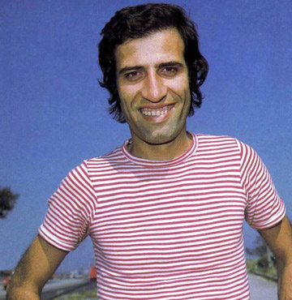

"ŞABAN"
Kemal Sunal, 11 Kasım 1944 tarihinde Türkiye'nin Malatya ilinde doğdu.
Sanat hayatı, "Zoraki Tabip" adlı tiyatro oyunuyla başladı.
Sinema filmlerinde Şaban tiplemesi ile adından söz ettirerek
Hababam Sınıfı serisi ile de akıllarda kalmayı başarmıştır. 3 Temmuz 2000 tarihinde Balalayka adlı filmin çekimlerine başlamak için Trabzon'a gitmek üzere bindiği uçakta kalkıştan hemen önce geçirdiği kalp krizi sonucu hayata gözlerini yumdu.